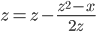

Welcome to this Go tutorial!
This tutorial is split into two sessions. You'll watch a short presentation at the beginning of each session, and then be left to work on the exercises in this document.
It's not expected that you should finish them in the short time we have, so don't be discouraged if you feel like you're not making progress.
At the end of each exercise is a spoiler box. Hover over the box to see the solution:
But only peek when you REALLY need to!
Don't be afraid to ask the lecturer, one of the teaching assistants, or other students for help.
Without further ado, the exercises!
Copy this code into a file named hello.go:
package main
import "fmt"
func main() {
fmt.Println("Hello, world")
}
Build and link the file using 6g and 6l
(or, if you're using a 32-bit system, 8g and 8l):
$ 6g hello.go
$ 6l hello.6
This will produce an executable named 6.out (or 8.out).
Run it, and you should see the Hello, world message.
$ ./6.out
Hello, world
You can run these three commands on the same line to quickly recompile and test your code:
$ 6g hello.go && 6l hello.6 && ./6.out
Hello, world
Write a function with this signature
func Sqrt(x float64) float64
that uses Newton's method to find the square root of n.
In this case, Newton's method is to approximate Sqrt(x) by picking a
starting point z and then repeating:

Add some lines to the main function to test your Sqrt.
package main
import "fmt"
func Sqrt(x float64) float64 {
var z, d float64 = x, 1
for d > 1e-15 {
z0 := z
z = z - (z*z-x)/(2*z)
d = z - z0
if d < 0 {
d = -d
}
}
return z
}
func main() {
fmt.Println(9, Sqrt(9))
}
Modify the program to import the flag package and print the command-line
arguments such that running ./6.out hello world produces the output:
0 hello
1 world
Hint: try the command godoc flag Args.
Hint: for i, v := range slice iterates over a slice,
with the key in i and the value in v.
package main
import (
"flag"
"fmt"
)
func main() {
flag.Parse()
for i, v := range flag.Args() {
fmt.Println(i, v)
}
}
The strconv package provides functions for converting between strings
and Go's basic types. Use strconv.Atof64 function to convert the
command-line arguments. Pass the resulting float64 values to your
Sqrt function.
Make sure to check the Atof64 function's os.Error return value and
print a diagnostic message if it is not nil.
package main
import (
"flag"
"fmt"
"strconv"
)
func Sqrt(x float64) float64 {
var z, d float64 = x, 1
for d > 1e-15 {
z0 := z
z = z - (z*z-x)/(2*z)
d = z - z0
if d < 0 {
d = -d
}
}
return z
}
func main() {
flag.Parse()
for _, v := range flag.Args() {
f, err := strconv.Atof64(v)
if err != nil {
fmt.Printf("Couldn't convert %q: %v\n", v, err)
continue
}
fmt.Printf("Sqrt(%v) = %v\n", f, Sqrt(f))
}
}
Set up a switch statement such that ./6.out sqrt 9 invokes Sqrt(9)
and ./6.out exp 2 invokes math.Exp(2), printing the results.
Take a look at the math package and add any other functions you find useful
to the switch statement. (Try adding a function that requires two arguments.)
package main
import (
"flag"
"fmt"
"math"
"strconv"
)
func Sqrt(x float64) float64 {
var z, d float64 = x, 1
for d > 1e-15 {
z0 := z
z = z - (z*z-x)/(2*z)
d = z - z0
if d < 0 {
d = -d
}
}
return z
}
func main() {
flag.Parse()
f, err := strconv.Atof64(flag.Arg(1))
if err != nil {
fmt.Printf("Couldn't convert %q: %v\n", flag.Arg(1), err)
return
}
switch flag.Arg(0) {
case "sqrt":
fmt.Printf("Sqrt(%v) = %v\n", f, Sqrt(f))
case "cbrt":
fmt.Printf("Cbrt(%v) = %v\n", f, math.Cbrt(f))
default:
fmt.Println("unrecognized command")
}
}
Copy this code into a file named web.go:
package main
import (
"fmt"
"http"
)
func handler(w http.ResponseWriter, r *http.Request) {
fmt.Fprint(w, "Hello, web")
}
func main() {
http.HandleFunc("/", handler)
http.ListenAndServe(":8080", nil)
}
Build and run it, then visit http://localhost:8080/. You should see the message "Hello, web".
Look at the documentation for the HandleFunc function with godoc http
HandleFunc. Note that it takes a function as its second argument, and
that our handler function matches that function signature.
Update the handler function so that it prints "Hello, Fred" when you visit http://localhost:8080/?name=Fred.
Hint: the query data is in r, the *http.Request.
Hint: see godoc http Request and godoc http FormValue.
Hint: call req.FormValue("name").
package main
import (
"fmt"
"http"
)
func handler(w http.ResponseWriter, r *http.Request) {
fmt.Fprint(w, "Hello, "+r.FormValue("name"))
}
func main() {
http.HandleFunc("/", handler)
http.ListenAndServe(":8080", nil)
}
Implement these types:
type String string
type Struct struct {
Greeting string
Punct string
Who string
}
and define ServeHTTP methods on them. The methods should write the
values themselves to the http.ResponseWriter.
This will allow them to be registered as http.Handlers. For example:
http.Handle("/string", String("I'm a frayed knot."))
http.Handle("/struct", Struct{"Hello", ":", "Gophers!"})
Hint: godoc http Handler.
Hint: func (s String) ServeHTTP(w http.ResponseWriter, r *http.Request).
Hint: use fmt.Fprint to write the value to w.
package main
import (
"fmt"
"http"
)
type String string
func (s String) ServeHTTP(w http.ResponseWriter, r *http.Request) {
fmt.Fprint(w, s)
}
type Struct struct {
Greeting string
Punct string
Who string
}
func (s Struct) ServeHTTP(w http.ResponseWriter, r *http.Request) {
fmt.Fprint(w, s)
}
func main() {
http.Handle("/string", String("I'm a frayed knot."))
http.Handle("/struct", Struct{"Hello", ":", "Gophers!"})
http.ListenAndServe(":8080", nil)
}
Copy this code into a new file, image.go:
package main
import (
"http"
"image"
"image/png"
)
var m image.Image
func img(w http.ResponseWriter, r *http.Request) {
w.Header().Set("Content-type", "image/png")
png.Encode(w, m)
}
func main() {
rgba := image.NewRGBA(300, 300)
for x := 0; x < 300; x++ {
for y := 0; y < 300; y++ {
rgba.Set(x, y, image.RGBAColor{0, 0, 0, 255})
}
}
m = rgba
http.HandleFunc("/", img)
http.ListenAndServe(":8080", nil)
}
This code implements a web server that serves a 300 by 300 pixel black PNG image. Try changing the color of the image.
The image.NewRGBA function returns an *image.RGBA that imlements the
image.Image interface; that's why we can assign rgba to the global
variable m.
type Image interface {
// ColorModel returns the Image's ColorModel.
ColorModel() ColorModel
// Bounds returns the domain for which At can return non-zero color.
Bounds() Rectangle
// At returns the color of the pixel at (x, y).
At(x, y int) Color
}
image.Image interfaceLet's implement our own image.Image. Drop the first 7 lines of the main
function, and create a new type:
type MyImage struct {
width, height int
}
Then implement the methods of the image.Image interface on MyImage.
That's ColorModel, Bounds, and At; refer to the Image interface type
definition above for their signatures and meanings.
ColorModel should just return image.RGBAColorModel, to instruct anything
that uses MyImage that it is an image composed of RGBA.
Bounds should return an image.Rectangle with the top-left point 0, 0
and the top right point width, height (where width and height are the
values from the MyImage struct).
At should return an image.RGBAColor value driven by some function of the
x and y coordinate; intesting functions include x^y, (x+y)/2, and
x*y. (Make sure you set the alpha field (the last one) to 255 or the pixel
will be transparent.)
Once you've done this, assign a MyImage value of m at the top of
your main function. (m = MyImage{300, 300})
Hint: the Image interface is defined in the image package, so all the
unqualified types in the function signatures should be qualified with a
package name (Rectangle should be image.Rectangle, for example).
package main
import (
"http"
"image"
"image/png"
)
var m image.Image
func img(w http.ResponseWriter, r *http.Request) {
w.Header().Set("Content-type", "image/png")
png.Encode(w, m)
}
type MyImage struct {
width, height int
}
func (m MyImage) ColorModel() image.ColorModel {
return image.RGBAColorModel
}
func (m MyImage) Bounds() image.Rectangle {
return image.Rect(0, 0, m.width, m.height)
}
func (m MyImage) At(x, y int) image.Color {
c := uint8(x*x + y*y)
return image.RGBAColor{c, c, c, 255}
}
func main() {
m = MyImage{300, 300}
http.HandleFunc("/", img)
http.ListenAndServe(":8080", nil)
}
We've really only scratched the surface with this tutorial, but I hope that you now have the knoweldge and confidence to delve deeper into Go on your own.
There is a wealth of Go resources—including more tutorials and code labs—available at golang.org.